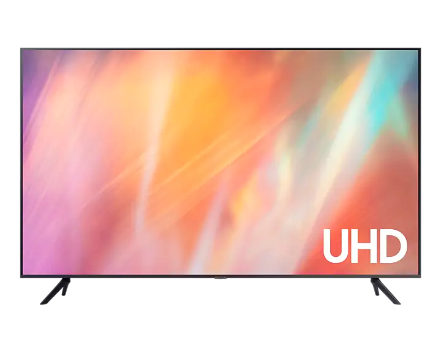
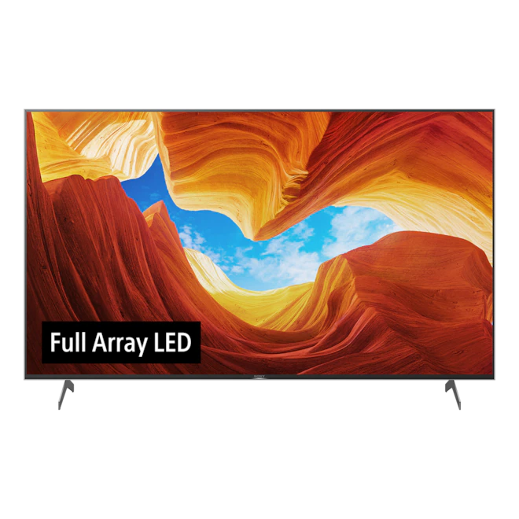
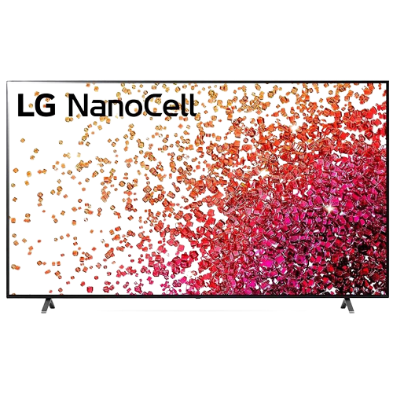
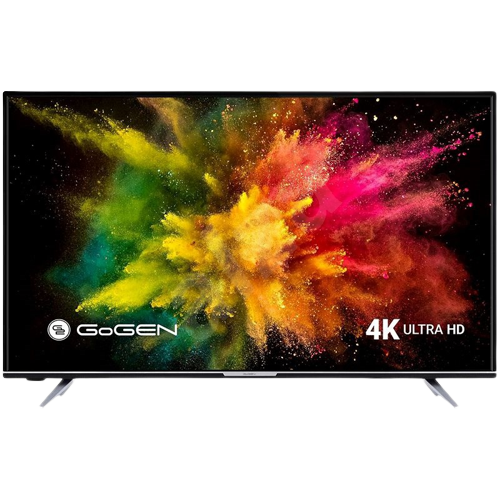
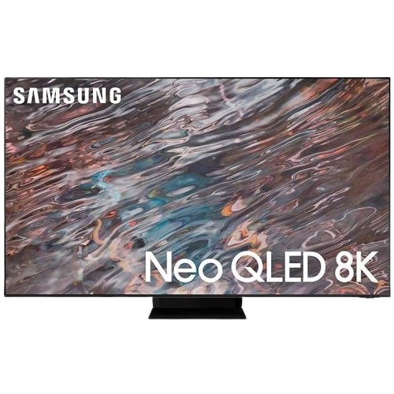

Elektrodom

Televízory
1. Televízor 65" Samsung UE65TU7092

- Parametre:
- Rozmery a hmotnosť
- Šírka - 144,84 cm
- Výška - 90,62 cm
- Hĺbka - 28,21 cm
- Výška bez podstavca - 82,98 cm
- Hĺbka bez podstavca - 5,95 cm
- Šírka podstavca/rozstup nožičiek - 118,55 cm
- Hmotnosť - 20,9 kg
- Uhopriečka a rozšírenie
- Uhlopriečka - 65" (165,1 cm)
- Maximálne rozlíšenie - 4K Ultra HD
- Rozlíšenie displeja - 3840 × 2160 Mpx
- Obrazovka
- Technológia - LCD LED
- Podsvietenie - Edge LED
- Obnovovacia frekvencia panelu - 50 / 60 Hz
- Ďalšie vlastnosti obrazu - HDR
- Podporované HDR štandardy - HDR10, HDR10+, HLG
- Typ
- Typ - Smart TV
- Operačný systém - Tizen OS
- Modelový rok
- Modelový rok - 2020
- Pripojenie
- Bezdrôtové pripojenie - WiFi , Apple AirPlay 2, DLNA
- Výstupy - 2.0 USB, LAN, HDMI 2.1, digitálny optický/digitálny audio výstup, CI+ 1.4
- HDMI - 2 ×
- USB - 1 ×
Cena: 649€
2. Televízor 49" Sony Bravia KD-49XH8077

- Parametre:
- Rozmery a hmotnosť
- Šírka - 110,1 cm
- Výška - 70,4 cm
- Hĺbka - 28,6 cm
- Výška bez podstavca - 64,5 cm
- Hĺbka bez podstavca - 5,7 cm
- Šírka podstavca/rozstup nožičiek - 55,4 cm
- Hmotnosť - 12,1 kg
- VESA prichytenie 200×200
- Uhopriečka a rozšírenie
- Uhlopriečka - 49" (124,46 cm)
- Maximálne rozlíšenie - 4K Ultra HD
- Rozlíšenie displeja - 3840 × 2160 Mpx
- Obrazovka
- Technológia - LCD LED
- Podsvietenie - Edge LED
- Obnovovacia frekvencia panelu - 50 / 60 Hz
- Ďalšie vlastnosti obrazu - HDR
- Podporované HDR štandardy - HDR10, Dolby Vision, HLG
- Typ
- Typ - Smart TV, Android TV
- Operačný systém - Android TV
- Modelový rok
- Modelový rok - 2020
- Pripojenie
- Bezdrôtové pripojenie - WiFi , DLNA
- Výstupy - USB, LAN, HDMI 2.0, slúchadlový výstup, digitálny optický/digitálny audio výstup, CI+, Kompozitný
- HDMI - 4 ×
- USB - 2 ×
Cena: 679€
3. Televízor 43" LG 43NANO75P

- Parametre:
- Rozmery a hmotnosť
- Šírka - 96,7 cm
- Výška - 62,2 cm
- Hĺbka - 21,6 cm
- Výška bez podstavca - 56,4 cm
- Hĺbka bez podstavca - 5,8 cm
- Šírka podstavca/rozstup nožičiek - 80,1 cm
- Hmotnosť - 9,3 kg
- VESA prichytenie 200×200
- Uhopriečka a rozšírenie
- Uhlopriečka - 43" (109,22 cm)
- Maximálne rozlíšenie - 4K Ultra HD
- Rozlíšenie displeja - 3840 × 2160 Mpx
- Obrazovka
- Technológia - LCD LED
- Podsvietenie - Direct LED
- Obnovovacia frekvencia panelu - 50 / 60 Hz
- Ďalšie vlastnosti obrazu - HDR
- Podporované HDR štandardy - HDR10, HLG
- Typ
- Typ - Smart TV
- Operačný systém - webOS
- Modelový rok
- Modelový rok - 2021
- Pripojenie
- Bezdrôtové pripojenie - WiFi , Bluetooth , DLNA
- Výstupy 2.0 - USB, LAN, HDMI 2.0
- HDMI - 3 ×
- USB - 2 ×
Cena: 529€
4. Televízor 43" Gogen TVU 43W652 STWEB

- Parametre:
- Rozmery a hmotnosť
- Šírka - 97 cm
- Výška - 62,5 cm
- Hĺbka - 23,5 cm
- Výška bez podstavca - 57 cm
- Hĺbka bez podstavca - 7,5 cm
- Šírka podstavca/rozstup nožičiek - 72,1 cm
- Hmotnosť - 7 kg
- VESA prichytenie 100×100
- Uhopriečka a rozšírenie
- Uhlopriečka - 43" (109,22 cm)
- Maximálne rozlíšenie - 4K Ultra HD
- Rozlíšenie displeja - 3840 × 2160 Mpx
- Obrazovka
- Technológia - LCD LED
- Podsvietenie - Direct LED
- Obnovovacia frekvencia panelu - 50 / 60 Hz
- Ďalšie vlastnosti obrazu - HDR
- Podporované HDR štandardy - HDR10, Dolby Vision
- Typ
- Typ - Smart TV
- Operačný systém - vlastný OS
- Modelový rok
- Modelový rok - 2019
- Pripojenie
- Bezdrôtové pripojenie - WiFi , Bluetooth , Párovanie s mobilným zariadením , DLNA , Miracast
- Výstupy 2.0 - USB, LAN, HDMI 2.0, slúchadlový výstup, CI+, D-SUB (VGA), Kompozitný
- HDMI - 2 ×
- USB - 1 ×
Cena: 339€
5. Televízor 85" Samsung QE85QN800A

- Parametre:
- Rozmery a hmotnosť
- Šírka - 189,34 cm
- Výška - 114,58 cm
- Hĺbka - 34,37 cm
- Výška bez podstavca - 10,83 cm
- Hĺbka bez podstavca - 17,4 cm
- Hmotnosť - 54,3 kg
- VESA prichytenie 600×400
- Uhopriečka a rozšírenie
- Uhlopriečka - 85" (215,9 cm)
- Maximálne rozlíšenie - Ultra HD 8K
- Rozlíšenie displeja - 7680 × 4320 px
- Obrazovka
- Technológia - QLED
- Podsvietenie - Mini LED
- Obnovovacia frekvencia panelu - 100 / 120 Hz
- Ďalšie vlastnosti obrazu - HDR, Local Diming
- Podporované HDR štandardy - HDR10, HDR10+, HLG
- Typ
- Typ - Smart TV
- Operačný systém - Tizen OS
- Modelový rok
- Modelový rok - 2021
- Pripojenie
- Bezdrôtové pripojenie - WiFi , Bluetooth , Apple AirPlay 2, DLNA
- Výstupy 2.0 - USB, LAN, HDMI 2.1, HDMI 2.0, digitálny optický/digitálny audio výstup, CI+ 1.4
- HDMI - 4 ×
- USB - 3 ×